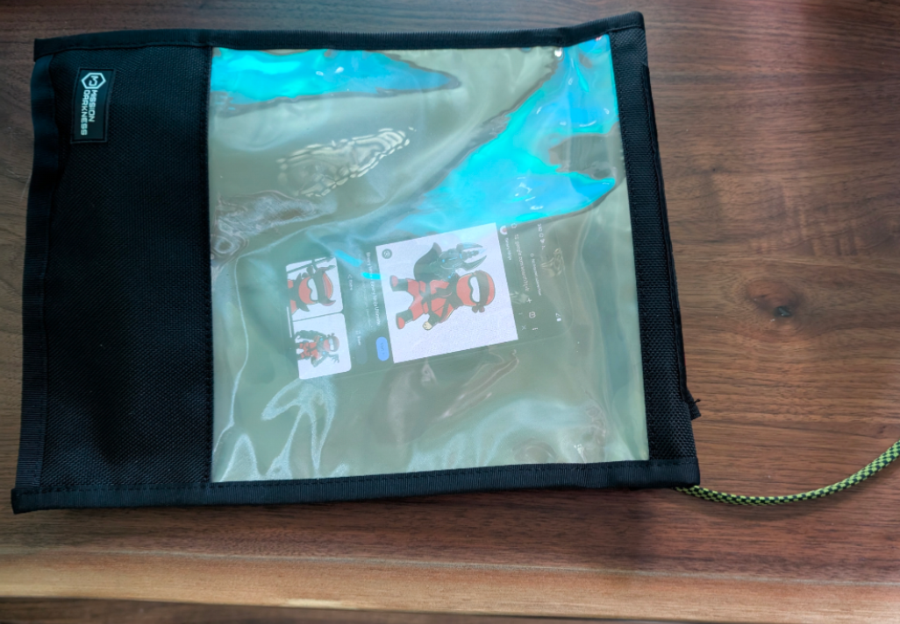

Setup
Purchase
The following is written with a pixel 9 bought from the google store without financing. Do not unlock the bootloader or root your personal use cellphone. Unlocking the bootloader will erase data on the pixel 9 and if done incorrectly and brick the device.
- Buying from sources other than Google can hinder unlocking of the bootloader.
- It has been reported Verizon disallows unlocking the bootloader of financed pixel 9 and when paid off will require you take additional actions for unlocking the bootloader.
- Note that carrier locking is different than bootloader locking
If you don't already have a cable to connect the pixel to a laptop I would suggest the 4-1 100W cable from xcool since it can connect to all common kinds of USB ports.
Depending on your use case the mission darkness faraday bag with window and usb passthrough works well. With max screen brightness you'll be able to observe the pixel 9 screen:
The pixel 9 has a variety of RF attack surface and can be interesting to reverse engineer. While there's cheaper ways to go about this one option is to use a B205 mini from Ettus Research.
- https://store.google.com/product/pixel_9
- https://mosequipment.com/products/mission-darkness-window-charge-shield-faraday-bag
- https://www.coolgadget.com/products/xcool-cable-monster-usb-c-charger-cable
- https://www.ettus.com/all-products/usrp-b205mini-i/
Unlock Bootloader
Unlocking the bootloader can provide the following:
- Obtain root with Magisk
- Downgrade to older software to develop against known vulns
- Rewrite kernel / vendor code for various purposes
- Recover from future bootloops
1. Enable developer mode:
- Settings -> About Phone
- Click on Build Number until developer mode is enabled
2. Enable OEM unlocking
- Settings -> Developer Options
- Click: OEM unlocking
- Enable: Allow OEM unlocking
3. Install fastboot on a laptop/desktop: https://developer.android.com/tools/releases/platform-tools#downloads
4. Reboot device into fast boot mode
- Restart device
- Hold volume down during restart process
- Fastboot menu should now be visible
5. Fastboot unlock
This step will erase data
- Connect device via usb to laptop
- On laptop execute: fastboot devices; ensure serial number is in stdout
- On laptop execute: fastboot flashing unlock
- Pixel 9 screen should display a warning regarding unlocking the bootloader
- Use volume buttons to change: "Do not unlock the bootloader" to "Unlock the bootloader"
- Press power button to trigger a reboot
- Debug menu should show: Device state: unlocked
- Press power button with option: Start
Each restart will display a warning regarding the bootloader being unlocked. Fastboot can be used to lock the bootloader.
- https://android.googlesource.com/platform/system/core/+/master/fastboot
Root
Root is not strictly required but can make your life easier when working with a pixel. You'll be able to interact with userspace device drivers, ssh with a laptop over usb and install packages in termux without root.
With the bootloader unlocked Magisk can be used to provide root.
1. Record the build number to download correct factory image.
- Settings -> About Phone
- Scroll to bottom
- At the time of writing my pixel 9's build number is: BP1A.250505.005
Recording an incorrect build number can brick your device
2. Obtain a factory image from https://developers.google.com/android/images for your device/build number.
Links to each factory image for each variant of the pixel devices:
- tokay aka Pixel 9
- komodo aka Pixel 9 Pro XL
- caiman aka Pixel 9 Pro
- comet aka Pixel 9 Pro Fold
- tegu for Pixel 9a
Take note of image variants for Verizon, DTAG, TW, EMEA, T-Mobile and Telestra. You don't want to mix and match variants (don't flash a Verizon variant if you didn't buy the pixel 9 from verizon).
3. After downloading the image check the sha256 hash matches.
If the hash doesn't match you will likely brick your device
4. Extract init_boot.img from factory image on laptop
- unzip tokay-bp1a.250505.005-factory-5e869188.zip
- unzip image-tokay-bp1a.250505.005.zip
- Observe init_boot.img
5. Download Magisk
- Download the latest apk from https://github.com/topjohnwu/Magisk/releases
6. Connect and Enable USB File Transfer.
- Move init_boot.img to Download folder of pixel's internal storage
- Move Magisk apk to Download folder of pixel's internal storage
7. Install Magisk apk
- Enable: Install unknown apps
- Click Magisk apk in Downloads folder to install
8. Patch init_boot.img from Magisk
- Execute Magisk: Install
- Select and Patch a File
- Select: init_boot.img (if init_boot.img is incorrect device will be bricked after flashing)
- Select: LET'S GO
- A newly created magisk_patched-29000_oMslj.img should be created next to init_boot.img on the pixel
- Transfer magisk_patched-29000_oMslj.img to your laptop
9. Enable Developer Mode / USB Debugging
- Enable developer mode again since it could be wiped after unlocking the bootloader
- Enable USB Debugging for adb
- Trust laptop for usb debugging
10. Reboot into bootloader
- Execute on laptop: adb devices
- A single device (your pixel phone) should be listed from previous command
- Execute on laptop: adb reboot bootloader
- Pixel should restart into fastboot mode
11. Flash patched init_boot.img
- Execute on laptop: fastboot flash init_boot /path/to/patched_init_boot.img
leland@light:~/Downloads/$ fastboot flash init_boot ./magisk_patched-29000_oMsIj.img
Sending 'init_boot_a' (8192 KB) OKAY [ 0.364s]
Writing 'init_boot_a' OKAY [ 0.074s]
Finished. Total time: 0.442s
- Execute on laptop: fastboot reboot
Finsh Setup QoL
1. Install Termux. Download the latest non-beta release for arm64 from
- https://github.com/termux/termux-app/releases
2. Execute in Termux: su
2. Grant Termux Root
- Execute in termux: su
- Magisk prompt will appear: grant termux superuser priv
4. Execute in Termux: pkg install openssh clang vim
5. Execute in Termux (pick password): passwd
6. SSH over usb with adb and termux
- Execute in Termux: sshd
- Execute on laptop: adb forward tcp:8022 tcp:8022
- Execute on laptop: ssh -p 8022 localhost
Drivers
Device Files
Background
On android and unix in general a special file called a character device driver exists to control physical hardware (gpu, camera, microphones, battery, gps, usb, etc). These files expose an interface for userland to interact with physical hardware/kernel module. This is done by the OS redirecting calls such as open, ioctl, read, write specified by the structure file_operations.
static const struct file_operations kbase_fops = {
.owner = THIS_MODULE,
.open = kbase_open,
.release = kbase_release,
.read = kbase_read,
.poll = kbase_poll,
.unlocked_ioctl = kbase_ioctl,
.compat_ioctl = kbase_ioctl,
.mmap = kbase_mmap,
.check_flags = kbase_check_flags,
.get_unmapped_area = kbase_get_unmapped_area,
};To list character devices in DevFS (root required):
# find / -type c 2>/dev/null | sortCharacter device list in DevFS
- /dev/0:0:0:0
- /dev/0:0:0:1
- /dev/0:0:0:2
- /dev/0:0:0:3
- /dev/0:0:0:49456
- /dev/0:0:0:49476
- /dev/0:0:0:49488
- /dev/acd-ambient_pcm
- /dev/acd-aocx_control
- /dev/acd-aocx_inject0
- /dev/acd-aocx_inject1
- /dev/acd-aocx_tapout0
- /dev/acd-aocx_tapout1
- /dev/acd-audio_ap_offload_rx
- /dev/acd-audio_ap_offload_tx
- /dev/acd-audio_bulk_rx
- /dev/acd-audio_bulk_tx
- /dev/acd-audio_dcdoff_ref
- /dev/acd-audio_haptaudio
- /dev/acd-audio_input_bulk_rx
- /dev/acd-audio_input_bulk_tx
- /dev/acd-audio_input_tuning
- /dev/acd-audio_output_tuning
- /dev/acd-audio_output_tuning_ext
- /dev/acd-audio_rtp_rx
- /dev/acd-audio_rtp_tx
- /dev/acd-audio_spatial_f1
- /dev/acd-audio_tap0
- /dev/acd-audio_tap1
- /dev/acd-audio_tap10
- /dev/acd-audio_tap11
- /dev/acd-audio_tap2
- /dev/acd-audio_tap3
- /dev/acd-audio_tap4
- /dev/acd-audio_tap5
- /dev/acd-audio_tap6
- /dev/acd-audio_tap7
- /dev/acd-audio_tap8
- /dev/acd-audio_tap9
- /dev/acd-chre_bt_offload_ctl
- /dev/acd-chre_bt_offload_data_rx
- /dev/acd-chre_bt_offload_data_tx
- /dev/acd-chre_ctl
- /dev/acd-chre_data_rx
- /dev/acd-chre_data_tx
- /dev/acd-com.google.chre
- /dev/acd-com.google.chre.non_wake_up
- /dev/acd-com.google.umfw_stat
- /dev/acd-com.google.usf
- /dev/acd-com.google.usf.non_wake_up
- /dev/acd-debug
- /dev/acd-factory_diag
- /dev/acd-hotword_notification
- /dev/acd-hotword_pcm
- /dev/acd-logging
- /dev/acd-mc_headpos
- /dev/acd-mel_processor
- /dev/acd-model_data
- /dev/acd-sound_trigger
- /dev/acd-trace_3z_0
- /dev/acd-trace_3z_1
- /dev/acd-trace_a32
- /dev/acd-trace_f1
- /dev/amcs
- /dev/aoc
- /dev/ashmem
- /dev/ashmema89909c8-c70e-430d-8521-dfc7ad14edb7
- /dev/battery_history
- /dev/bigwave
- /dev/binderfs/binder
- /dev/binderfs/binder-control
- /dev/binderfs/hwbinder
- /dev/binderfs/vndbinder
- /dev/cluster0_freq_max
- /dev/cluster0_freq_min
- /dev/cluster1_freq_max
- /dev/cluster1_freq_min
- /dev/cluster2_freq_max
- /dev/cluster2_freq_min
- /dev/console
- /dev/cpu_dma_latency
- /dev/device-mapper
- /dev/dma_heap/aaudio_capture_heap
- /dev/dma_heap/aaudio_playback_heap
- /dev/dma_heap/faceauth_dsp-secure
- /dev/dma_heap/faceauth_tpu-secure
- /dev/dma_heap/famodel-secure
- /dev/dma_heap/faprev-secure
- /dev/dma_heap/farawimg-secure
- /dev/dma_heap/mfc_fw-secure
- /dev/dma_heap/sensor_direct_heap
- /dev/dma_heap/system
- /dev/dma_heap/system-uncached
- /dev/dma_heap/tui-secure
- /dev/dma_heap/vframe-secure
- /dev/dma_heap/video_system
- /dev/dma_heap/video_system-uncached
- /dev/dma_heap/vscaler-secure
- /dev/dma_heap/vstream-secure
- /dev/dri/card0
- /dev/dri/renderD128
- /dev/edgetpu-soc
- /dev/fimg2d
- /dev/full
- /dev/fuse
- /dev/g2d
- /dev/gnss_boot
- /dev/gnss_dump
- /dev/gnss_ipc
- /dev/gpiochip0
- /dev/gpiochip1
- /dev/gpiochip10
- /dev/gpiochip11
- /dev/gpiochip12
- /dev/gpiochip13
- /dev/gpiochip14
- /dev/gpiochip15
- /dev/gpiochip16
- /dev/gpiochip17
- /dev/gpiochip18
- /dev/gpiochip19
- /dev/gpiochip2
- /dev/gpiochip20
- /dev/gpiochip21
- /dev/gpiochip22
- /dev/gpiochip23
- /dev/gpiochip24
- /dev/gpiochip25
- /dev/gpiochip26
- /dev/gpiochip27
- /dev/gpiochip28
- /dev/gpiochip29
- /dev/gpiochip3
- /dev/gpiochip30
- /dev/gpiochip31
- /dev/gpiochip32
- /dev/gpiochip33
- /dev/gpiochip34
- /dev/gpiochip35
- /dev/gpiochip36
- /dev/gpiochip37
- /dev/gpiochip38
- /dev/gpiochip39
- /dev/gpiochip4
- /dev/gpiochip40
- /dev/gpiochip41
- /dev/gpiochip42
- /dev/gpiochip43
- /dev/gpiochip44
- /dev/gpiochip45
- /dev/gpiochip46
- /dev/gpiochip47
- /dev/gpiochip48
- /dev/gpiochip49
- /dev/gpiochip5
- /dev/gpiochip50
- /dev/gpiochip51
- /dev/gpiochip52
- /dev/gpiochip53
- /dev/gpiochip54
- /dev/gpiochip55
- /dev/gpiochip56
- /dev/gpiochip57
- /dev/gpiochip58
- /dev/gpiochip59
- /dev/gpiochip6
- /dev/gpiochip60
- /dev/gpiochip61
- /dev/gpiochip62
- /dev/gpiochip63
- /dev/gpiochip64
- /dev/gpiochip7
- /dev/gpiochip8
- /dev/gpiochip9
- /dev/gsa0
- /dev/gsc0
- /dev/gti.0
- /dev/gxp
- /dev/hdcp2
- /dev/hw_random
- /dev/i2c-10
- /dev/i2c-19
- /dev/i2c-2
- /dev/i2c-3
- /dev/i2c-4
- /dev/i2c-5
- /dev/i2c-6
- /dev/i2c-7
- /dev/i2c-8
- /dev/i2c-9
- /dev/input/event0
- /dev/input/event1
- /dev/input/event2
- /dev/input/event3
- /dev/ispolin_ranging
- /dev/kmsg
- /dev/kvm
- /dev/logbuffer_bd
- /dev/logbuffer_btlpm
- /dev/logbuffer_cpif
- /dev/logbuffer_cpm
- /dev/logbuffer_dsim0
- /dev/logbuffer_max77779_fwupdate
- /dev/logbuffer_max77779fg
- /dev/logbuffer_max77779fg_monitor
- /dev/logbuffer_pca9468
- /dev/logbuffer_pcie0
- /dev/logbuffer_pcie1
- /dev/logbuffer_rtx
- /dev/logbuffer_ssoc
- /dev/logbuffer_tcpm
- /dev/logbuffer_ttf
- /dev/logbuffer_tty18
- /dev/logbuffer_usbpd
- /dev/logbuffer_wireless
- /dev/loop-control
- /dev/lwis-act-cornerfolk
- /dev/lwis-act-cornerfolk-dokkaebi
- /dev/lwis-act-cornerfolk-taotie-uw
- /dev/lwis-be-core
- /dev/lwis-dpm
- /dev/lwis-eeprom-djinn
- /dev/lwis-eeprom-smaug-dokkaebi
- /dev/lwis-eeprom-smaug-taotie-uw
- /dev/lwis-flash-lm3644
- /dev/lwis-gdc0
- /dev/lwis-gdc1
- /dev/lwis-gse
- /dev/lwis-gtnr-align
- /dev/lwis-gtnr-merge
- /dev/lwis-isp-fe
- /dev/lwis-lme
- /dev/lwis-mcsc
- /dev/lwis-ois-djinn
- /dev/lwis-sensor-boitata
- /dev/lwis-sensor-dokkaebi
- /dev/lwis-sensor-taotie-uw
- /dev/lwis-slc
- /dev/lwis-test
- /dev/lwis-top
- /dev/lwis-votf
- /dev/mali0
- /dev/multipdp
- /dev/null
- /dev/oem_ipc0
- /dev/oem_ipc1
- /dev/oem_ipc2
- /dev/oem_ipc3
- /dev/oem_ipc4
- /dev/oem_ipc5
- /dev/oem_ipc6
- /dev/oem_ipc7
- /dev/oem_test
- /dev/pmsg0
- /dev/ppp
- /dev/ptmx
- /dev/pts/0
- /dev/pts/1
- /dev/pts/ptmx
- /dev/qbt_fd
- /dev/qbt_ipc
- /dev/random
- /dev/rfkill
- /dev/rio
- /dev/rtc0
- /dev/sg0
- /dev/sg1
- /dev/sg2
- /dev/sg3
- /dev/sg4
- /dev/sg5
- /dev/sg6
- /dev/snapshot
- /dev/snd/comprC0D6
- /dev/snd/controlC0
- /dev/snd/pcmC0D0p
- /dev/snd/pcmC0D10c
- /dev/snd/pcmC0D11c
- /dev/snd/pcmC0D12c
- /dev/snd/pcmC0D13c
- /dev/snd/pcmC0D14p
- /dev/snd/pcmC0D15c
- /dev/snd/pcmC0D16p
- /dev/snd/pcmC0D17c
- /dev/snd/pcmC0D18p
- /dev/snd/pcmC0D19p
- /dev/snd/pcmC0D1p
- /dev/snd/pcmC0D20c
- /dev/snd/pcmC0D21c
- /dev/snd/pcmC0D22c
- /dev/snd/pcmC0D23p
- /dev/snd/pcmC0D24p
- /dev/snd/pcmC0D25p
- /dev/snd/pcmC0D26c
- /dev/snd/pcmC0D27c
- /dev/snd/pcmC0D28p
- /dev/snd/pcmC0D29p
- /dev/snd/pcmC0D2p
- /dev/snd/pcmC0D30p
- /dev/snd/pcmC0D31p
- /dev/snd/pcmC0D32c
- /dev/snd/pcmC0D3p
- /dev/snd/pcmC0D4p
- /dev/snd/pcmC0D53p
- /dev/snd/pcmC0D54c
- /dev/snd/pcmC0D5p
- /dev/snd/pcmC0D7p
- /dev/snd/pcmC0D8c
- /dev/snd/pcmC0D9c
- /dev/snd/timer
- /dev/sscd_aoc
- /dev/sscd_bigwave
- /dev/sscd_debugcore
- /dev/sscd_gnss
- /dev/sscd_gxp_callisto
- /dev/sscd_mali
- /dev/sscd_mfc-core
- /dev/sscd_rio
- /dev/sscd_wlan
- /dev/st21nfc
- /dev/st54spi
- /dev/tcm0
- /dev/touch_offload
- /dev/trusty-ipc-dev0
- /dev/trusty-log0
- /dev/tty
- /dev/ttyGS0
- /dev/ttyGS1
- /dev/ttyGS2
- /dev/ttySAC0
- /dev/ttySAC18
- /dev/ttynull
- /dev/tui-driver
- /dev/tun
- /dev/ublk-control
- /dev/ufs-bsg0
- /dev/uhid
- /dev/uinput
- /dev/umts_boot0
- /dev/umts_dm0
- /dev/umts_ipc0
- /dev/umts_ipc1
- /dev/umts_loopback
- /dev/umts_rcs0
- /dev/umts_rcs1
- /dev/umts_rfs0
- /dev/umts_router
- /dev/umts_toe0
- /dev/umts_wfc0
- /dev/umts_wfc1
- /dev/urandom
- /dev/usb_accessory
- /dev/userfaultfd
- /dev/v4l-touch0
- /dev/vhost-vsock
- /dev/video10
- /dev/video11
- /dev/video12
- /dev/video6
- /dev/video7
- /dev/video8
- /dev/video9
- /dev/vsock
- /dev/watchdog
- /dev/watchdog0
- /dev/watchdog1
- /dev/wbrc
- /dev/zero
- /sys/fs/selinux/null
There are 369 results in DevFS. To help narrow focus find which are directly and indirectly assessible from an unprivileged context.
To find directly assessible character devices try to open each device then write to stdout if successful.
#include "stdio.h"
int main() {
char* devices[] = {"/dev/0:0:0:0", "/dev/0:0:0:1", "/dev/0:0:0:2", "/dev/0:0:0:3", "/dev/0:0:0:49456", "/dev/0:0:0:49476", "/dev/0:0:0:49488", "/dev/acd-ambient_pcm", "/dev/acd-aocx_control", "/dev/acd-aocx_inject0", "/dev/acd-aocx_inject1", "/dev/acd-aocx_tapout0", "/dev/acd-aocx_tapout1", "/dev/acd-audio_ap_offload_rx", "/dev/acd-audio_ap_offload_tx", "/dev/acd-audio_bulk_rx", "/dev/acd-audio_bulk_tx", "/dev/acd-audio_dcdoff_ref", "/dev/acd-audio_haptaudio", "/dev/acd-audio_input_bulk_rx", "/dev/acd-audio_input_bulk_tx", "/dev/acd-audio_input_tuning", "/dev/acd-audio_output_tuning", "/dev/acd-audio_output_tuning_ext", "/dev/acd-audio_rtp_rx", "/dev/acd-audio_rtp_tx", "/dev/acd-audio_spatial_f1", "/dev/acd-audio_tap0", "/dev/acd-audio_tap1", "/dev/acd-audio_tap10", "/dev/acd-audio_tap11", "/dev/acd-audio_tap2", "/dev/acd-audio_tap3", "/dev/acd-audio_tap4", "/dev/acd-audio_tap5", "/dev/acd-audio_tap6", "/dev/acd-audio_tap7", "/dev/acd-audio_tap8", "/dev/acd-audio_tap9", "/dev/acd-chre_bt_offload_ctl", "/dev/acd-chre_bt_offload_data_rx", "/dev/acd-chre_bt_offload_data_tx", "/dev/acd-chre_ctl", "/dev/acd-chre_data_rx", "/dev/acd-chre_data_tx", "/dev/acd-com.google.chre", "/dev/acd-com.google.chre.non_wake_up", "/dev/acd-com.google.umfw_stat", "/dev/acd-com.google.usf", "/dev/acd-com.google.usf.non_wake_up", "/dev/acd-debug", "/dev/acd-factory_diag", "/dev/acd-hotword_notification", "/dev/acd-hotword_pcm", "/dev/acd-logging", "/dev/acd-mc_headpos", "/dev/acd-mel_processor", "/dev/acd-model_data", "/dev/acd-sound_trigger", "/dev/acd-trace_3z_0", "/dev/acd-trace_3z_1", "/dev/acd-trace_a32", "/dev/acd-trace_f1", "/dev/amcs", "/dev/aoc", "/dev/ashmem", "/dev/ashmema89909c8-c70e-430d-8521-dfc7ad14edb7", "/dev/battery_history", "/dev/bigwave", "/dev/binderfs/binder", "/dev/binderfs/binder-control", "/dev/binderfs/hwbinder", "/dev/binderfs/vndbinder", "/dev/cluster0_freq_max", "/dev/cluster0_freq_min", "/dev/cluster1_freq_max", "/dev/cluster1_freq_min", "/dev/cluster2_freq_max", "/dev/cluster2_freq_min", "/dev/console", "/dev/cpu_dma_latency", "/dev/device-mapper", "/dev/dma_heap/aaudio_capture_heap", "/dev/dma_heap/aaudio_playback_heap", "/dev/dma_heap/faceauth_dsp-secure", "/dev/dma_heap/faceauth_tpu-secure", "/dev/dma_heap/famodel-secure", "/dev/dma_heap/faprev-secure", "/dev/dma_heap/farawimg-secure", "/dev/dma_heap/mfc_fw-secure", "/dev/dma_heap/sensor_direct_heap", "/dev/dma_heap/system", "/dev/dma_heap/system-uncached", "/dev/dma_heap/tui-secure", "/dev/dma_heap/vframe-secure", "/dev/dma_heap/video_system", "/dev/dma_heap/video_system-uncached", "/dev/dma_heap/vscaler-secure", "/dev/dma_heap/vstream-secure", "/dev/dri/card0", "/dev/dri/renderD128", "/dev/edgetpu-soc", "/dev/fimg2d", "/dev/full", "/dev/fuse", "/dev/g2d", "/dev/gnss_boot", "/dev/gnss_dump", "/dev/gnss_ipc", "/dev/gpiochip0", "/dev/gpiochip1", "/dev/gpiochip10", "/dev/gpiochip11", "/dev/gpiochip12", "/dev/gpiochip13", "/dev/gpiochip14", "/dev/gpiochip15", "/dev/gpiochip16", "/dev/gpiochip17", "/dev/gpiochip18", "/dev/gpiochip19", "/dev/gpiochip2", "/dev/gpiochip20", "/dev/gpiochip21", "/dev/gpiochip22", "/dev/gpiochip23", "/dev/gpiochip24", "/dev/gpiochip25", "/dev/gpiochip26", "/dev/gpiochip27", "/dev/gpiochip28", "/dev/gpiochip29", "/dev/gpiochip3", "/dev/gpiochip30", "/dev/gpiochip31", "/dev/gpiochip32", "/dev/gpiochip33", "/dev/gpiochip34", "/dev/gpiochip35", "/dev/gpiochip36", "/dev/gpiochip37", "/dev/gpiochip38", "/dev/gpiochip39", "/dev/gpiochip4", "/dev/gpiochip40", "/dev/gpiochip41", "/dev/gpiochip42", "/dev/gpiochip43", "/dev/gpiochip44", "/dev/gpiochip45", "/dev/gpiochip46", "/dev/gpiochip47", "/dev/gpiochip48", "/dev/gpiochip49", "/dev/gpiochip5", "/dev/gpiochip50", "/dev/gpiochip51", "/dev/gpiochip52", "/dev/gpiochip53", "/dev/gpiochip54", "/dev/gpiochip55", "/dev/gpiochip56", "/dev/gpiochip57", "/dev/gpiochip58", "/dev/gpiochip59", "/dev/gpiochip6", "/dev/gpiochip60", "/dev/gpiochip61", "/dev/gpiochip62", "/dev/gpiochip63", "/dev/gpiochip64", "/dev/gpiochip7", "/dev/gpiochip8", "/dev/gpiochip9", "/dev/gsa0", "/dev/gsc0", "/dev/gti.0", "/dev/gxp", "/dev/hdcp2", "/dev/hw_random", "/dev/i2c-10", "/dev/i2c-19", "/dev/i2c-2", "/dev/i2c-3", "/dev/i2c-4", "/dev/i2c-5", "/dev/i2c-6", "/dev/i2c-7", "/dev/i2c-8", "/dev/i2c-9", "/dev/input/event0", "/dev/input/event1", "/dev/input/event2", "/dev/input/event3", "/dev/ispolin_ranging", "/dev/kmsg", "/dev/kvm", "/dev/logbuffer_bd", "/dev/logbuffer_btlpm", "/dev/logbuffer_cpif", "/dev/logbuffer_cpm", "/dev/logbuffer_dsim0", "/dev/logbuffer_max77779_fwupdate", "/dev/logbuffer_max77779fg", "/dev/logbuffer_max77779fg_monitor", "/dev/logbuffer_pca9468", "/dev/logbuffer_pcie0", "/dev/logbuffer_pcie1", "/dev/logbuffer_rtx", "/dev/logbuffer_ssoc", "/dev/logbuffer_tcpm", "/dev/logbuffer_ttf", "/dev/logbuffer_tty18", "/dev/logbuffer_usbpd", "/dev/logbuffer_wireless", "/dev/loop-control", "/dev/lwis-act-cornerfolk", "/dev/lwis-act-cornerfolk-dokkaebi", "/dev/lwis-act-cornerfolk-taotie-uw", "/dev/lwis-be-core", "/dev/lwis-dpm", "/dev/lwis-eeprom-djinn", "/dev/lwis-eeprom-smaug-dokkaebi", "/dev/lwis-eeprom-smaug-taotie-uw", "/dev/lwis-flash-lm3644", "/dev/lwis-gdc0", "/dev/lwis-gdc1", "/dev/lwis-gse", "/dev/lwis-gtnr-align", "/dev/lwis-gtnr-merge", "/dev/lwis-isp-fe", "/dev/lwis-lme", "/dev/lwis-mcsc", "/dev/lwis-ois-djinn", "/dev/lwis-sensor-boitata", "/dev/lwis-sensor-dokkaebi", "/dev/lwis-sensor-taotie-uw", "/dev/lwis-slc", "/dev/lwis-test", "/dev/lwis-top", "/dev/lwis-votf", "/dev/mali0", "/dev/multipdp", "/devull", "/dev/oem_ipc0", "/dev/oem_ipc1", "/dev/oem_ipc2", "/dev/oem_ipc3", "/dev/oem_ipc4", "/dev/oem_ipc5", "/dev/oem_ipc6", "/dev/oem_ipc7", "/dev/oem_test", "/dev/pmsg0", "/dev/ppp", "/dev/ptmx", "/dev/pts/0", "/dev/pts/1", "/dev/pts/ptmx", "/dev/qbt_fd", "/dev/qbt_ipc", "/dev/random", "/dev/rfkill", "/dev/rio", "/dev/rtc0", "/dev/sg0", "/dev/sg1", "/dev/sg2", "/dev/sg3", "/dev/sg4", "/dev/sg5", "/dev/sg6", "/dev/snapshot", "/dev/snd/comprC0D6", "/dev/snd/controlC0", "/dev/snd/pcmC0D0p", "/dev/snd/pcmC0D10c", "/dev/snd/pcmC0D11c", "/dev/snd/pcmC0D12c", "/dev/snd/pcmC0D13c", "/dev/snd/pcmC0D14p", "/dev/snd/pcmC0D15c", "/dev/snd/pcmC0D16p", "/dev/snd/pcmC0D17c", "/dev/snd/pcmC0D18p", "/dev/snd/pcmC0D19p", "/dev/snd/pcmC0D1p", "/dev/snd/pcmC0D20c", "/dev/snd/pcmC0D21c", "/dev/snd/pcmC0D22c", "/dev/snd/pcmC0D23p", "/dev/snd/pcmC0D24p", "/dev/snd/pcmC0D25p", "/dev/snd/pcmC0D26c", "/dev/snd/pcmC0D27c", "/dev/snd/pcmC0D28p", "/dev/snd/pcmC0D29p", "/dev/snd/pcmC0D2p", "/dev/snd/pcmC0D30p", "/dev/snd/pcmC0D31p", "/dev/snd/pcmC0D32c", "/dev/snd/pcmC0D3p", "/dev/snd/pcmC0D4p", "/dev/snd/pcmC0D53p", "/dev/snd/pcmC0D54c", "/dev/snd/pcmC0D5p", "/dev/snd/pcmC0D7p", "/dev/snd/pcmC0D8c", "/dev/snd/pcmC0D9c", "/dev/snd/timer", "/dev/sscd_aoc", "/dev/sscd_bigwave", "/dev/sscd_debugcore", "/dev/sscd_gnss", "/dev/sscd_gxp_callisto", "/dev/sscd_mali", "/dev/sscd_mfc-core", "/dev/sscd_rio", "/dev/sscd_wlan", "/dev/st21nfc", "/dev/st54spi", "/dev/tcm0", "/dev/touch_offload", "/dev/trusty-ipc-dev0", "/dev/trusty-log0", "/dev/tty", "/dev/ttyGS0", "/dev/ttyGS1", "/dev/ttyGS2", "/dev/ttySAC0", "/dev/ttySAC18", "/dev/ttynull", "/dev/tui-driver", "/dev/tun", "/dev/ublk-control", "/dev/ufs-bsg0", "/dev/uhid", "/dev/uinput", "/dev/umts_boot0", "/dev/umts_dm0", "/dev/umts_ipc0", "/dev/umts_ipc1", "/dev/umts_loopback", "/dev/umts_rcs0", "/dev/umts_rcs1", "/dev/umts_rfs0", "/dev/umts_router", "/dev/umts_toe0", "/dev/umts_wfc0", "/dev/umts_wfc1", "/dev/urandom", "/dev/usb_accessory", "/dev/userfaultfd", "/dev/v4l-touch0", "/dev/vhost-vsock", "/dev/video10", "/dev/video11", "/dev/video12", "/dev/video6", "/dev/video7", "/dev/video8", "/dev/video9", "/dev/vsock", "/dev/watchdog", "/dev/watchdog0", "/dev/watchdog1", "/dev/wbrc", "/dev/zero", "/sys/fs/selinuxull", };
for (int deviceIndex=0; deviceIndex < 370; ++deviceIndex) {
if (0 < open(devices[deviceIndex], O_RDWR) ) {
printf("%s\n", devices[deviceIndex]);
}
}
return 0;
}
Directly assessible character devices from unprivileged context
- /dev/ashmem
- /dev/ashmema89909c8-c70e-430d-8521-dfc7ad14edb7
- /dev/binderfs/binder
- /dev/binderfs/hwbinder
- /dev/mali0
- /dev/ptmx
- /dev/pts/0
- /dev/pts/1
- /dev/random
- /dev/tty
- /dev/urandom
- /dev/zero